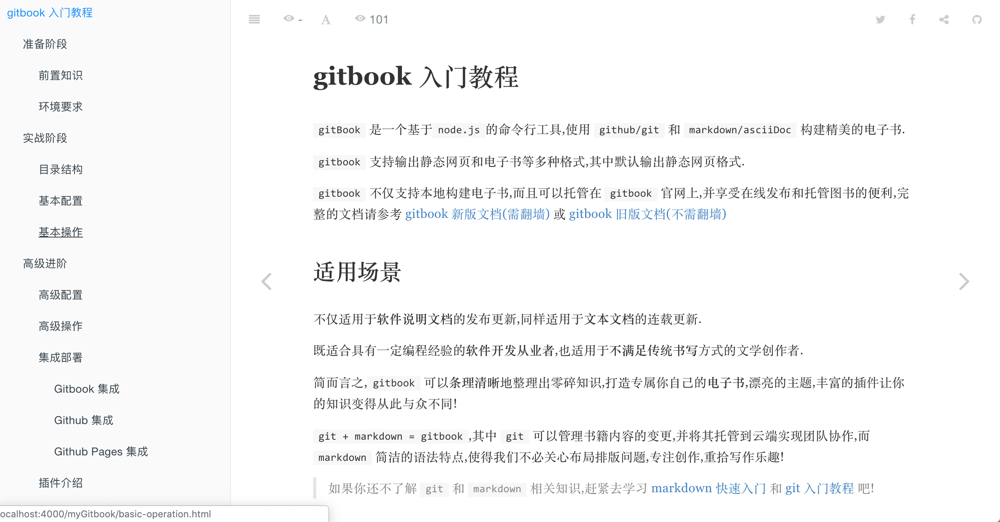
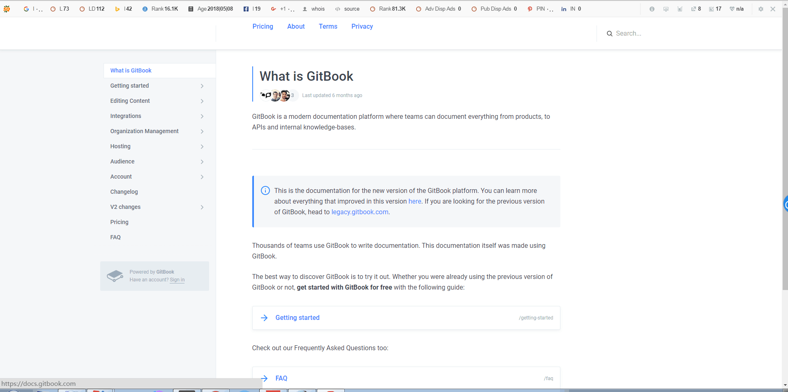

1. gitbook 入门教程
gitBook 是一个基于node.js的命令行工具,使用 github/git 和 markdown/asciiDoc 构建精美的电子书.
gitbook 支持输出静态网页和电子书等多种格式,其中默认输出静态网页格式.
gitbook 不仅支持本地构建电子书,而且可以托管在 gitbook 官网上,并享受在线发布和托管图书的便利,完整的文档请参考 gitbook 新版文档(需FQ) 或 gitbook 旧版文档(不需FQ)
1.1. 适用场景
不仅适用于软件说明文档的发布更新,同样适用于文本文档的连载更新.
既适合具有一定编程经验的软件开发从业者,也适用于不满足传统书写方式的文学创作者.
简而言之,gitbook 可以条理清晰地整理出零碎知识,打造专属你自己的电子书,漂亮的主题,丰富的插件让你的知识变得从此与众不同!
git + markdown = gitbook,其中 git 可以管理书籍内容的变更,并将其托管到云端实现团队协作,而 markdown 简洁的语法特点,使得我们不必关心布局排版问题,专注创作,重拾写作乐趣!
如果你还不了解
git和markdown相关知识,赶紧去学习 markdown 快速入门 和 git 入门教程 吧!
1.2. 先睹为快
1.2.1. gitbook 教程

1.2.2. gitbook 官网
1.2.3. gitbook 文档

1.3. 参考文档
gitbook新版需要FQ,旧版不需要FQ